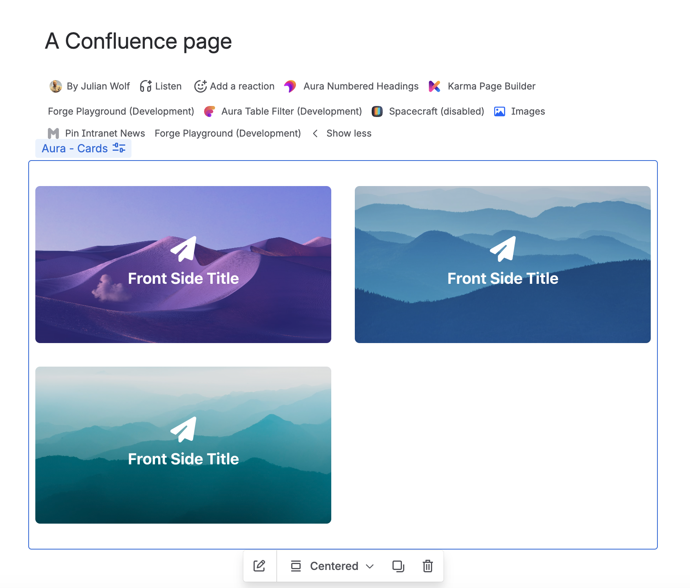
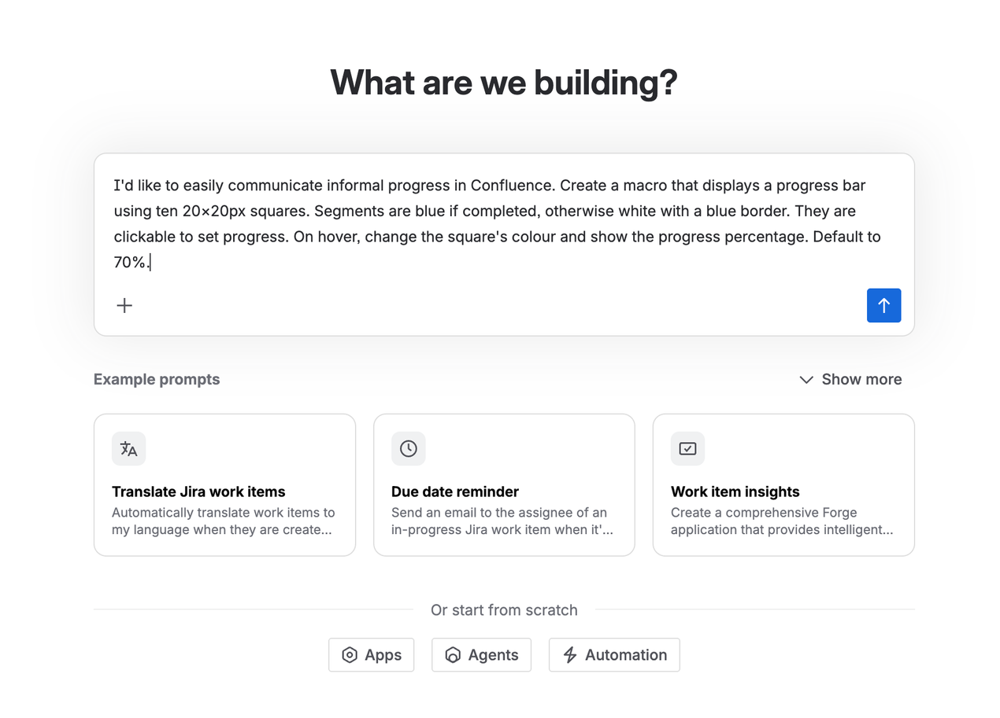
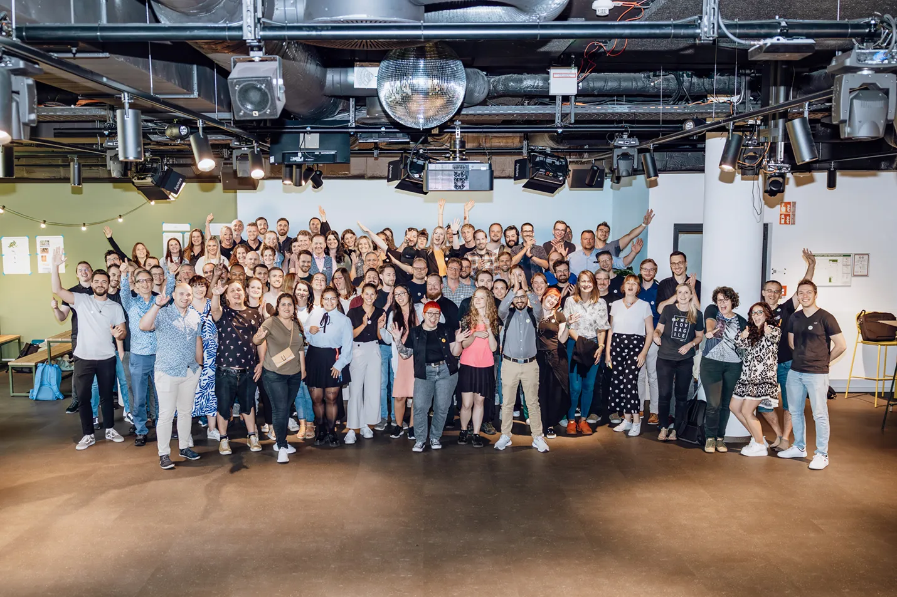

Julian Wolf
Seibert Group
Know What to Build in Rovo Studio
Confluence Macros
Confluence Macros

Rovo Studio

Key Takeaways
What you'll
walk away with.
Follow along and leave with something tangible.
Macro Types
Know the Confluence experiences Rovo can build
Manifest Patterns
Understand the YAML behind each macro type
Prompt Vocabulary
Describe app capabilities clearly in Rovo Studio
Rovo + Macros
See how agents can insert configured macros
About Seibert
Atlassian Platinum
Solution Partner.
Founded 1996 in Wiesbaden, Germany.
~500 employees across offices in 🇩🇪 Germany, 🇦🇹 Austria, 🇩🇰 Denmark, 🇫🇷 France, 🇨🇭 Switzerland & the 🇺🇸 USA.
Atlassian Partner since 2009.

1. Basic Macro
A block on a Confluence page that renders its own experience.
manifest.yml
modules:
macro:
- key: hello-world-macro
title: Hello World Macro --1--
resource: main
resolver:
function: main-handler
function:
- key: main-handler
handler: index.handler
resources:
- key: main
path: static
Prompt Rovo Studio
Append this guidance to my request and build it as a Forge Confluence basic macro.
Use this macro type when the macro only needs to render content on a Confluence page. It should not ask for settings, should not wrap editor content, and should not be created from pasted URLs.
Keep the implementation minimal:
- one macro module
- one Custom UI resource
- one resolver function if backend data is needed
- no config block
- no layout: bodied
- no autoConvert block
Relevant manifest.yml pattern:
modules:
macro:
- key:
title:
resource: main
resolver:
function: main-handler
function:
- key: main-handler
handler: index.handler
resources:
- key: main
path: static
Use stable lowercase keys, a clear title for the Confluence insert menu, and keep each macro instance independent. If my request includes UI details, implement those in the Custom UI. If my request needs backend data, expose it through the resolver; otherwise keep the resolver minimal. 2. Bodied Macro
Let authors place rich Confluence content inside your macro.
manifest.yml
modules:
macro:
- key: hello-world-bodied
title: Hello World Bodied --2--
resource: main
resolver:
function: main-handler
layout: bodied
function:
- key: main-handler
handler: index.handler
resources:
- key: main
path: static
Prompt Rovo Studio
Append this guidance to my request and build it as a Forge Confluence bodied macro.
Use this macro type when the macro should contain author-managed Confluence page content. The user should be able to insert the macro and then place rich text, lists, tables, mentions, or other editor content inside it.
The defining manifest property is layout: bodied.
Do not replace this with configuration. A bodied macro is about editable page content inside the macro, not user settings.
Relevant manifest.yml pattern:
modules:
macro:
- key:
title:
resource: main
resolver:
function: main-handler
layout: bodied
function:
- key: main-handler
handler: index.handler
resources:
- key: main
path: static
Keep the macro otherwise simple unless my request says otherwise. Only add config if I explicitly ask for settings. Only add autoConvert if I explicitly ask for pasted URL conversion. Make the rendered UI visually support the body-content use case, for example by framing, labeling, summarizing, or enhancing the content the author places inside. 3. Configurable Macro
Ask users for settings so the macro can render personalized content.
manifest.yml
modules:
macro:
- key: configurable-button-macro
title: Configurable Button --3--
resource: main
resolver:
function: main-handler
config:
title: Configure button
resource: main
function:
- key: main-handler
handler: index.handler
resources:
- key: main
path: static
Prompt Rovo Studio
Append this guidance to my request and build it as a Forge Confluence configurable macro.
Use this macro type when each macro instance needs user-provided settings. The configuration should be opened from the macro edit/config flow and the rendered macro should use the saved values for that specific macro instance.
The defining manifest property is config under the macro module. Use macro configuration for per-instance values; do not store simple per-macro settings globally in app storage.
Relevant manifest.yml pattern:
modules:
macro:
- key:
title:
resource: main
resolver:
function: main-handler
config:
title:
resource: main
function:
- key: main-handler
handler: index.handler
resources:
- key: main
path: static
Implement a clear configuration UI for the fields implied by my request. Validate required fields, provide sensible defaults where useful, and show a helpful empty state when the macro has not been configured yet. Use the same resource for rendering and configuration unless the app structure benefits from a separate config resource. 4. Fullscreen Macro
Use more space when configuration needs a richer picker or workflow.
manifest.yml
modules:
macro:
- key: hello-world-fullscreen-macro
title: People Card --4--
resource: main
resolver:
function: main-handler
config:
title: Pick people
resource: main
viewportSize: fullscreen
Prompt Rovo Studio
Append this guidance to my request and build it as a Forge Confluence macro with fullscreen configuration.
Use this macro type when configuration needs more space than the normal macro config dialog: complex pickers, previews, multi-step setup, searching, filtering, or selecting multiple items.
This is still a configurable macro. The defining difference is config.viewportSize: fullscreen.
Store the chosen values as macro configuration for the individual macro instance.
Relevant manifest.yml pattern:
modules:
macro:
- key:
title:
resource: main
resolver:
function: main-handler
config:
title:
resource: main
viewportSize: fullscreen
function:
- key: main-handler
handler: index.handler
resources:
- key: main
path: static
Design the configuration UI for a fullscreen workflow: clear heading, primary action, cancel/back behavior, searchable or browsable choices if relevant, and a summary of the selected configuration. The rendered macro should handle missing or partial configuration gracefully. 5. Autoconvert Macro
Paste a matching URL and Confluence turns it into your macro.
manifest.yml
modules:
macro:
- key: autoconvert-hello-wold
title: Autoconvert Hello World --5--
resource: main
resolver:
function: main-handler
autoConvert:
matchers:
- pattern: "https://www.fifa.com/en/tournaments/mens/worldcup/canadamexicousa2026/teams/*"
- pattern: "https://www.fifa.com/en/tournaments/mens/worldcup/canadamexicousa2026/teams/*/"
- pattern: "https://www.fifa.com/en/tournaments/mens/worldcup/canadamexicousa2026/teams/*/*"
- pattern: "https://www.fifa.com/en/tournaments/mens/worldcup/canadamexicousa2026/teams/*/*/"
Prompt Rovo Studio
Append this guidance to my request and build it as a Forge Confluence autoconvert macro.
Use this macro type when pasting a URL into the Confluence editor should automatically replace the URL with a macro. The macro should be driven by the pasted URL and render a useful preview, embed, card, or enriched representation of that URL.
The defining manifest property is autoConvert.matchers. Add URL patterns for the domains and paths from my request. Keep patterns specific enough to avoid converting unrelated links, but include common variants such as trailing slashes when needed.
Relevant manifest.yml pattern:
modules:
macro:
- key:
title:
resource: main
resolver:
function: main-handler
autoConvert:
matchers:
- pattern: "https://example.com/path/*"
- pattern: "https://example.com/path/*/"
function:
- key: main-handler
handler: index.handler
resources:
- key: main
path: static
If my request names a URL format, derive the matcher patterns from it. If the URL contains IDs or slugs, use wildcard segments where appropriate. The rendered macro should preserve or use the original URL context. Do not add macro configuration unless I explicitly ask for settings in addition to autoconvert. 5. Rovo Agent Integration
The agent interprets the request and uses an action to add the right macro.
manifest.yml
modules:
rovo:agent:
- key: page-edit-agent
name: Page Edit Agent
description: Adds configured macros to the current Confluence page.
prompt: >
When the user asks for a people list, identify the names
and call insert-people-list-macro with contentId and names.
conversationStarters:
- Add a people list macro for Avery Johnson and Mia Chen.
- Insert a people card for Nora Ahmed, Theo Müller, and Yuki Tanaka.
actions:
- insert-people-list-macro
action:
- key: insert-people-list-macro
name: Insert People List Macro
function: insertPeopleListMacro
actionVerb: CREATE
description: Appends a configured People Card macro to the current page.
inputs:
contentId:
title: Content ID
type: string
required: true
names:
title: Person names
type: string
required: true
function:
- key: insertPeopleListMacro
handler: index.insertPeopleListMacro
insert-people-list-macro.ts
type InsertPeopleListMacroPayload = {
contentId?: string;
names?: string[] | string;
context?: { confluence?: { resourceType?: string } };
};
export const insertPeopleListMacro = async (
payload: InsertPeopleListMacroPayload,
) => {
const contentId = payload.contentId;
const contentType = resourceTypeToContentType(
payload.context?.confluence?.resourceType,
);
const personIds = getPersonIds(toNames(payload.names));
const pageInfo = await fetchPageOrBlogInfo(
contentId,
contentType,
"atlas_doc_format",
);
const adf = JSON.parse(pageInfo.content);
const nextAdf = {
...adf,
content: [
...adf.content,
buildPeopleListMacroNode(personIds),
],
};
await updatePageOrBlogContent({
bodyFormat: "atlas_doc_format",
content: nextAdf,
contentId,
contentType,
title: pageInfo.title,
version: pageInfo.version,
message: "Insert people list macro",
});
return JSON.stringify({ inserted: true, personIds });
};
Get started
https://studio.atlassian.com/
Hit a roadbump?
https://seibert.biz/forge-macros
- Forge Workshops
- Templates for advanced apps
Have a question?
julian.wolf@seibert.group